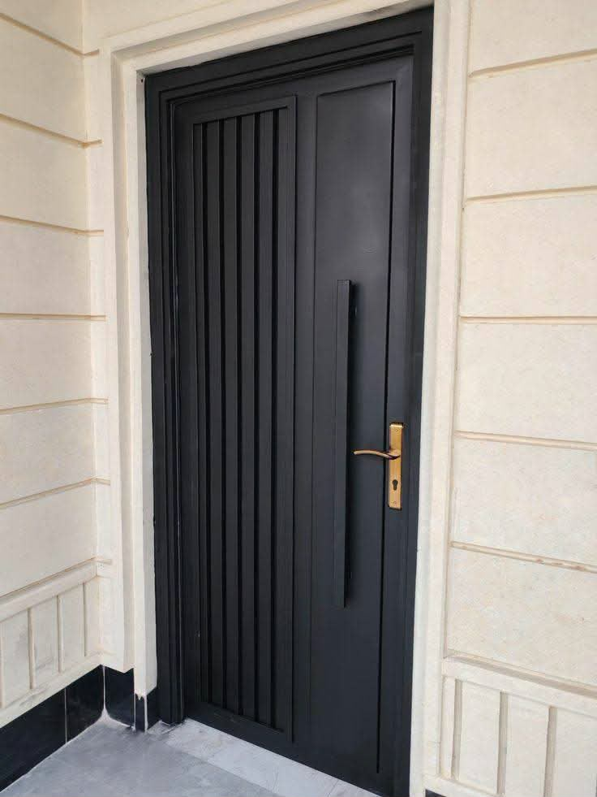
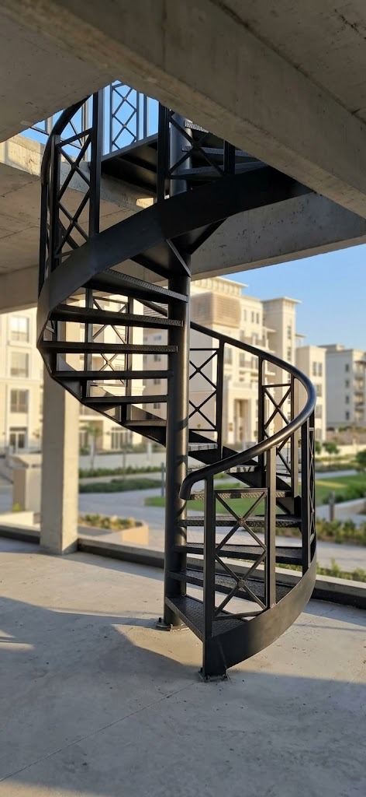

خدمة متنقلة
الوصول إلى موقع العميل داخل مكة حسب إمكانية الوصول.
اختر نوع العمل

تفصيل أبواب للمداخل والمنازل حسب القياس والتصميم.
عرض الخدمة ←
شبابيك للفتحات السكنية والخارجية بمقاسات مخصصة.
عرض الخدمة ←
حلول ألمنيوم سكنية وفق أبعاد الفتحة والاستخدام.
عرض الخدمة ←
تفصيل درابزين يتبع مسار السلم ونقاط التثبيت.
عرض الخدمة ←
برجولات للحدائق والمنازل والمساحات الخارجية.
عرض الخدمة ←
مظلات سكنية بمقاسات تراعي الموقف وحركة المركبة.
عرض الخدمة ←
تنفيذ وتركيب تغطيات القرميد بعد تقييم الموقع.
عرض الخدمة ←
غرف وكبائن حسب المقاس والاستخدام مع تنسيق التركيب في الموقع.
عرض الخدمة ←
تفصيل وتجهيز قواعد مناسبة للمقاس وطبيعة الموقع.
عرض الخدمة ←
تنفيذ هياكل وتغطيات معدنية حسب المشروع والموقع.
عرض الخدمة ←
حلول تغطية مفصلة ومركبة حسب أبعاد المكان.
عرض الخدمة ←أرسل صور الموقع والمقاسات التقريبية ونوع العمل والشكل المطلوب. نراجع التفاصيل ونحدد الحاجة إلى معاينة قبل تقديم تقدير مناسب.
الوصول إلى موقع العميل داخل مكة حسب إمكانية الوصول.
مراجعة أبعاد الموقع بدل افتراض مقاسات موحدة.
الاتصال أو واتساب لإرسال الصور والتفاصيل.
السعر يرتبط بالخامة والمقاسات والتصميم والتركيب.
طلبات حدادة إضافية
يمكن مناقشة تفصيل أسوار الحديد والديكورات المعدنية وأعمال الدرج الداخلي ضمن طلبات الحدادة في مكة. يتحدد الحل المناسب بعد مراجعة الصور والمقاسات ونقاط التثبيت، دون افتراض تصميم أو خامة قبل المعاينة.
لطلب حداد أبواب أو حداد شبابيك أو حداد درابزين وسلالم، اختر صفحة الخدمة المرتبطة وأرسل تفاصيل الموقع للحصول على الخطوة المناسبة.